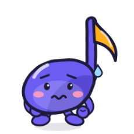
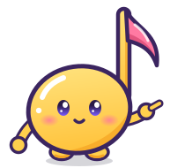

<!doctype html><meta charset="utf-8"><title>キャラクター一覧</title><style>body{font-family:sans-serif;background:#f4f3fb;display:flex;flex-wrap:wrap;gap:16px;padding:16px}figure{background:#fff;border-radius:16px;margin:0;padding:12px;text-align:center}</style><figure><figcaption><b>hello</b><br>あいさつ・はじめての方へ</figcaption></figure><figure><figcaption><b>happy</b><br>クリア（★1〜2）</figcaption></figure><figure><figcaption><b>celebrate</b><br>★3・全クリア</figcaption></figure><figure><figcaption><b>cheer</b><br>もう一度（クリアならず）</figcaption></figure><figure><figcaption><b>worried</b><br>見つからない・エラー</figcaption></figure><figure><figcaption><b>guide</b><br>案内・おすすめ</figcaption></figure><figure><figcaption><b>crown</b><br>有料版</figcaption></figure>